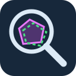

S.I.B.I.L.L.A. LAB — TEST SPERIMENTALE
Materiale riservato al gruppo di ricerca, destinato esclusivamente alla sperimentazione e alla verifica scientifica.
Verifica sperimentale • orari Europe/Rome • nessuna esportazione
Caricamento archivio…
Verifica scientifica — scostamento proiezione/osservazione
┄ Verde ≤15 km┄ Giallo 15–40 km┄ Rosso >40 km┄ Grigio: verifica non disponibile
Soglie sperimentali. Distanza del centroide osservato dall'area proiettata più vicina; il contorno rappresenta l'inviluppo radar disponibile, non il bordo esatto della precipitazione. La colorazione del tratteggio non rappresenta livelli di rischio o pericolosità meteorologica.Risultato del confronto
In attesa dei dati.
Distanza media dalle aree proiettate—
Centroidi dentro le aree—
Centroidi fuori dalle aree—
Dettagli scientifici
Lo scostamento temporale della proiezione non è ancora misurabile.
Sorgenti e contributi
Caricamento stato attuale…